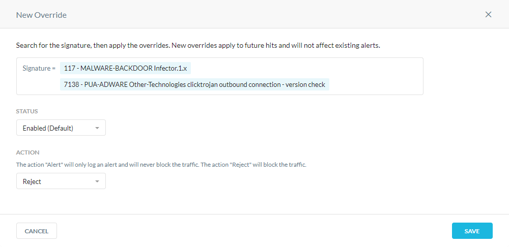

Create a Signature Override
You can configure exceptions to the CTEP policy by creating signature overrides. New overrides only apply to future events and won't affect existing alerts.
To create a signature override:
Go to Settings > Threat Protection > CTEP Settings.
Under Signature Overrides, click New Override.
In the New Override window:
Signature: Select the signatures you want to inspect in your organization's traffic. You can search for a signature by name or ID.
Status: Select one of the following options.
Enabled: Enable matching for the signatures.
Disabled: Disable matching for the signatures.
Action: Select one of the following options.
Alert: Allow traffic and send alerts based on the signature match.
Reject: Block traffic based on the signature match.
If you enabled Alert Only Mode for signature matching, Alert is the default action, and you can't modify this field.
Click Save.
You can view these events in the SkopeIT Alerts page.